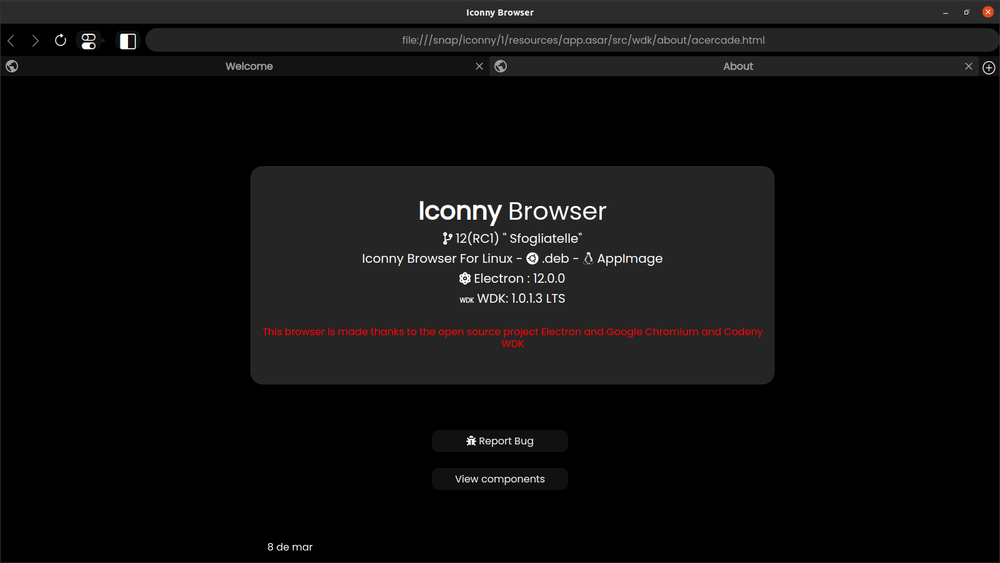
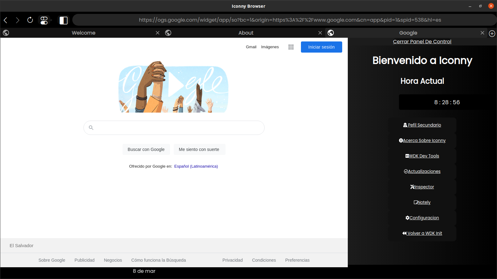
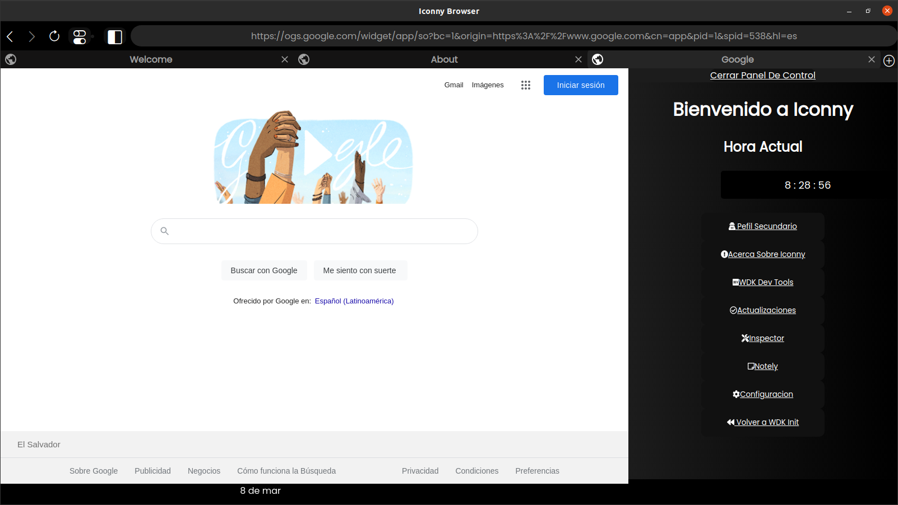

Iconny Browser Linux "Sfogliatelle" 12 Stable
Escrito por Admin 09/03/2021

Despues de 1 mes de espera 4 betas y 3 releases candidates Iconny 12 con nombre en codigo Sfogliatelle ha llegado con multiples novedades
Esta version podemos decir que es la que menos funciones y mas pequeña de todas ya que esta mayoritariamente se dedico a arreglar bugs y ademas la actualizacion de paquetes e inaguracion de varias cosas
Lastimosamente se atraso todo el calendario
Novedades
Como primera es que hubo un cambio algo radical en los iconos
Nuevos iconos
Como segunda es que el dropdown y el web panel de lastpass se han dejado de funcionar para tener el panel de control

Nuevo panel de control
Se ha reescrito desde cero el perfil secundario haciendolo mucho mas completo

Nuevo perfil secundario
Como segunda es que el dropdown y el web panel de lastpass se han dejado de funcionar para tener el panel de control

Nuevo panel de control
Se ha reescrito desde cero el perfil secundario haciendolo mucho mas completo
Nuevo perfil secundario
LANZAMIENTO EN SNAP
Esperamos que les guste estos nuevas funciones y cambios ya que hasta el momento esta ha sido la actualizacion mas grande del navegador
Se ha dedicado mucho esfuerzo en esta version
Atte Administrador Descargar desde Snap Store
Descargar 12 Stable AppImage
Ver Release En Github